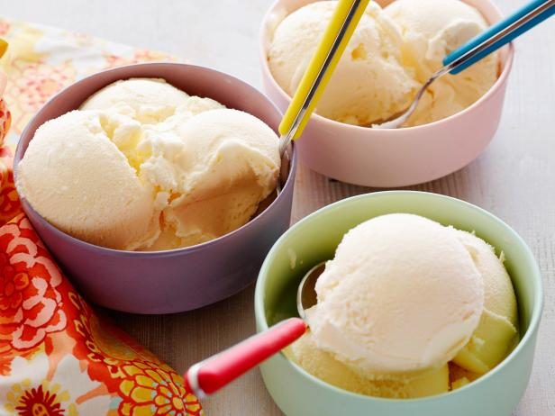

To make Vanilla Ice cream at home, take a small bowl and add 1 teaspoon cornflour in 4 tablespoon milk, stir it into a smooth paste. Ensure that you use cold milk or lumps will be formed. Mix well and keep the mixture aside. In the meantime, take a vessel and boil the milk, keep stirring so that the milk does not stick to the bottom.
Reduce the milk to half. This will ensure that your ice cream turns out to be creamy. Now add in the cornflour and milk mixture. stirring occasionally. Now, add the sugar and allow the milk to reduce. Once the consistency of milk thickens, reduce the flame to low
Next, add the fresh cream and vanilla essence and mix well. After mixing, turn off the flame and pour the mixture into an aluminium container. Cover the container with an aluminium foil and freeze for 6 hours or till semi-set.
Remove from the freezer and pour the mixture into a blender and blend till smooth. Transfer the mixture back into the same aluminium container. Cover with an aluminium foil and freeze for 10 hours or till set. Your Homemade Vanilla Ice Cream is ready! Scoop the vanilla ice cream in some crispy waffle cones and enjoy the flavourful dessert.
